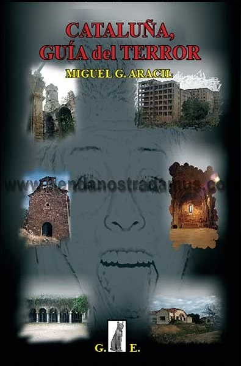

100 escapades misterioses per Catalunya
Jordi Desvilar
Un recorrido fascinante por 100 lugares en Cataluña poco conocidos, envueltos en misterio, leyendas e historias
sorprendentes. Desde rincones naturales hasta monumentos olvidados, Desvilar nos invita a descubrir sitios mágicos
que esconden secretos, fenómenos inexplicables y relatos que han pasado desapercibidos en la historia oficial catalana.
Aenigma Monserratus
Raúl Sacrest Castro
Este libro se sumerge en el enigma espiritual y energético de la montaña de Montserrat, considerada un punto neurálgico
mágico-religioso. El autor explora su simbolismo, los fenómenos paranormales, la conexión telúrica, y su papel como centro
de fe, peregrinación y leyenda. Una visión holística de uno de los lugares más enigmáticos de Cataluña.
Vivencias de un contactado
Luis José Grifol
Testimonio personal de uno de los contactados más conocidos de España. Grifol relata sus experiencias de contacto con
inteligencias extraterrestres, centradas principalmente en Montserrat, donde afirma haber tenido avistamientos regulares
desde los años 70. El libro combina relatos místicos, mensajes cósmicos y reflexiones espirituales sobre la humanidad y
el universo.
Bruixes
Mercè Foradada
Dos voces femeninas en distintas épocas —una en la posguerra española y otra en el siglo XVII— narran su experiencia
de persecución por haber desafiado las normas sociales de su tiempo. El libro aborda la figura de la "bruja" como
símbolo de mujeres libres, condenadas por su diferencia. Una historia de sororidad, represión y resiliencia femenina.
Cataluña de leyenda
César Alcalá
Colección de relatos legendarios de todo el territorio catalán. Criaturas fantásticas, almas errantes, enigmas
históricos y pueblos encantados dan forma a esta guía de lo mágico en Cataluña. Ideal para amantes de las tradiciones
orales y del folclore, este libro rescata mitos transmitidos durante siglos que aún perviven en la cultura popular.
Montserrat, montaña mágica
Miguel G. Arcil
Una de las obras más emblemáticas sobre Montserrat y sus misterios. Arcil recopila décadas de leyendas: avistamientos
OVNI, presencia nazi en busca del Santo Grial, energías especiales, símbolos ocultos y fenómenos inexplicables.
Esta edición revisada incorpora nuevos casos y teorías que refuerzan la visión de Montserrat como un enclave mágico
único.

Cataluña, guía del terror
Miguel G. Arcil
Una ruta por los rincones más espeluznantes de Cataluña. Desde hospitales abandonados y pueblos fantasma hasta
apariciones sobrenaturales, el autor nos presenta una geografía del miedo, perfecta para quienes buscan historias de
terror en lugares reales. Cada lugar incluye contexto histórico y testimonios que amplifican el misterio.
El cielo bajo los pies
Elsa Plaza
Novela histórica basada en el caso real de Enriqueta Martí, “la vampira del Raval”, en la Barcelona de principios del
siglo XX. A través de una protagonista ficticia, se revela una ciudad sombría marcada por la miseria, la trata de menores
y la corrupción policial. Plaza reconstruye con rigor el ambiente del Raval y sugiere una lectura crítica sobre los verdaderos
monstruos sociales.
El laberinto de los espíritus
Carlos Ruiz Zafón
El laberinto de los espíritus es la novela que cierra la célebre tetralogía de El Cementerio de los Libros Olvidados. Ambientada en una Barcelona oscura
y turbulenta de la posguerra, la historia está protagonizada por Alicia Gris, una mujer misteriosa y atormentada, convertida en investigadora por encargo
del régimen franquista.
El misterio de la calle Poniente
Fernando Gómez
Novela negra histórica inspirada en hechos reales de Barcelona en febrero de 1912: la desaparición de una niña de tres años destapa una red de
asesinatos infantiles relacionados con Enriqueta Martí, la “vampira del Raval”. Se ambienta en un contexto marcado por la miseria social, la Semana
Trágica y la corrupción policial, mezclando investigación criminal con un retrato oscuro de la sociedad de la época
Girona, tierra de mitos y leyendas
Joan de Déu Prats
Recopilación de 58 relatos fantásticos y míticos del territorio de Girona. El autor combina documentación histórica con leyendas sobre íberos,
romanos, fantasmas, hadas, dracs y tesoros ocultos. Historias sobre menhires, dòlmens, bosques mágicos, sirenas y otros seres, en una obra amena
y ricamente documentada que rescata la tradición oral y el folclore local
Guía de la Catalunya misteriosa, mágica y paranormal
Josep M. Armengou
Guía ilustrada que recorre los rincones más enigmáticos de Cataluña: fenómenos paranormales, mitos ancestrales, energías ocultas y leyendas populares.
La estructura práctica permite realizar itinerarios temáticos y descubrir lo oculto tras edificios, parajes y pueblos llenos de historias olvidadas o
desconocidas .
Guía de la Catalunya paranormal y mágica
Miguel G. Aracil
Compilación de fenómenos paranormales que van desde bosques encantados, psicofonías, vampirismo y brujería hasta avistamientos OVNI. A través de
anécdotas, testimonios y exploraciones sobre el terreno, Aracil nos introduce en una Cataluña alternativa, donde lo extraordinario convive con lo cotidiano
Guía de seres fantásticos de los Países Catalanes
Miguel G. Aracil
Obra de unas 120 páginas que documenta los seres de la mitología catalana (Cataluña, Valencia y Baleares), incluyendo duendes, hadas, vampiros, ogros,
genios y más. Se presenta como una enciclopedia accesible que explica características, localización geográfica y trasfondo cultural de estas criaturas mágicas
Guía fantástica de Catalunya
Josep Guijarro
Guía que mezcla historia, misterio y tradición: ovnis, templarios, cátaros, masonería, fantasmas, casas encantadas, lugares malditos y enigmas medievales.
Desde el Santo Grial hasta dólmens prehistóricos, Guijarro rescata relatos que oscilan entre lo mítico y lo investigado, invitando a descubrir una Cataluña
fantástica e insólita .
Hadas, gnomos, sílfides y ondinas
Miguel G. Aracil
Estudio riguroso y desplegado de las criaturas del mundo elemental: hadas, gnomos, silfos, ondinas, duendes, elfos, salamandras y otros seres mágicos.
Describe sus características, misiones, modos de vida y por qué algunas especies han desaparecido. Incluye su presencia en España y Europa, con fotografías
y leyendas tradicionales.
La mala dona
Marc Pastor
Ambientada en la Barcelona de principios del siglo XX, esta novela negra se centra en una serie de desapariciones de niños, hijos de prostitutas, que no
se atreven a denunciar. La noticia de un supuesto “monstruo” o vampiro que acecha en los barrios bajos se extiende rápidamente. El inspector Moisès Corvo,
amante de la bebida y los burdeles, y su compañero Juan Malsano, se encargan del caso cuando aparece un cadáver cerca del Liceo. Madres aterradas,
atmósfera opresiva y lo sobrenatural se combinan en una investigación cada vez más oscura
Les històries naturals
Joan Perucho
Novela fantástica ambientada durante la Primera Guerra Carlista (1833‑1840) en Barcelona. El científico naturalista Antoni de Montpalau inicia un viaje
iniciático al descubrir a Onofre de Dip, un caballero medieval convertido en vampiro. Combina novela histórica, gótica y fantástica, explorando el choque
entre racionalismo ilustrado y lo sobrenatural
Les bruixes de Llers
Carles Fages de Climent
Poemario publicado en 1924, con ilustraciones de Salvador Dalí y prólogo de Ventura Gassol. A través de versos y baladas ambientados en el Empordà,
evoca mitos y leyendas sobre las brujas de Llers: hermanas míticas, pastorcillas, fuerza de los vientos mágicos, con un lenguaje lleno de color y misterio
Leyendas del planeta Thámyris
Joan Manuel Gisbert
Antología de leyendas fantásticas procedentes de Thámyris, un planeta descubierto por un astrónomo. El narrador recibe cartas que relatan relatos
mitológicos: la Pirámide de la Noche Eterna, el origen de Mileterris, el continente insular, el Devorador de Sueños, Centilia o el Universo Inmóvil.
Un mundo lejanamente parecido a la Tierra, donde luz y tinieblas combaten
Los diarios de Enriqueta Martí
Antonio Gracia José (Pierrot)
Se presenta como un diario ficticio de Enriqueta Martí, la conocida “vampira de Barcelona” detenida el 10 de marzo de 1912. Acusada de prostituir y
asesinar niños para extraer su sangre y grasa y fabricar pócimas, su historia sacudió la ciudad. Aunque contiene hechos reales extraídos de periódicos
de ya en 1911/12, el diario dramatiza su vida y actos
Misteris de Catalunya per passar por
Sylvia Lagarda‑Mata
Guía de terror e intriga dirigida a un público infantil/juvenil. Recoge 29 historias misteriosas, basadas en sucesos reales (o casi), acontecidos en
distintas localidades de Catalunya a lo largo de los siglos. Cuentos escalofriantes ideales para introducir a los jóvenes en el folclore y las leyendas de
la región
Vampiros en Barcelona
Varios autores
Antología compuesta por nueve relatos de vampiros ambientados en Barcelona. Cada autor explora diferentes rincones ocultos de la ciudad y sus criaturas
nocturnas. Misterio, lugares poco conocidos y ambiente gótico confluyen en estas historias que prometen sorprender al lector
Veus de mort als Encants Vells
Sylvia Lagarda‑Mata
Thriller histórico ambientado en la Barcelona de 1840. El famoso detective Auguste Dupin se enfrenta al caso de un asesino en serie que mata por libros
antiguos. La novela mezcla asesinatos, librerías, ambiente negro y las primeras “crónicas mediáticas” de la ciudad. Premio Santa Eulàlia de novela de
Barcelona 2024